Alcune referenze
Società di distribuzione e trasporto del gas, multiutility e imprese di costruzione che si sono affidate a CISAC per la protezione catodica delle loro strutture interrate.
Fra i clienti ci sono operatori del trasporto del gas come Snam Rete Gas, S.G.I. Società Gasdotti Italia e il Consorzio della Media Valtellina per il Trasporto del Gas; società di distribuzione e multiutility come Italgas, A2A, Unareti, Hera, Iren, Ascopiave e Gruppo Tea; imprese di costruzione di reti come Pizio e S.A.L.P. Per tutti CISAC progetta, installa e mantiene impianti di protezione catodica e ne verifica l’efficacia con misure periodiche.
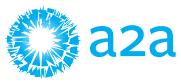
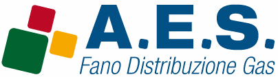
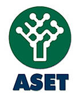
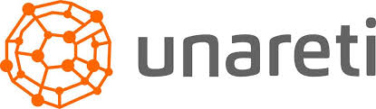
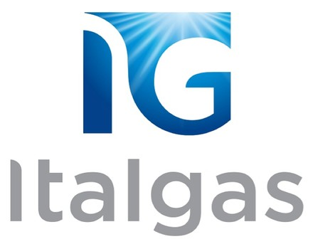
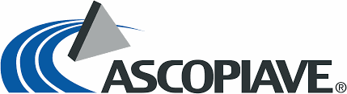
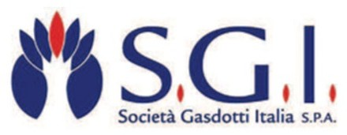
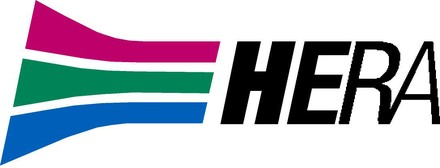
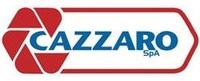
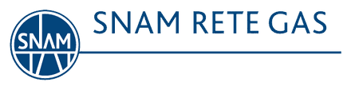
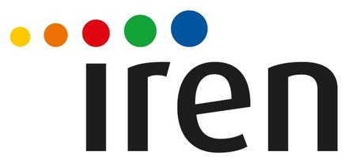
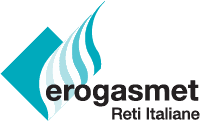
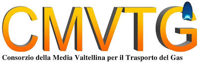
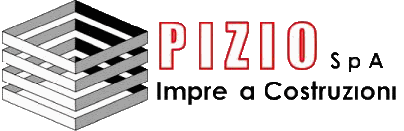
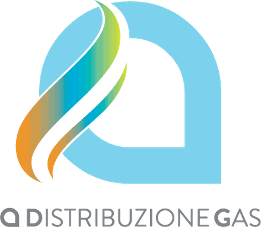
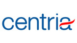
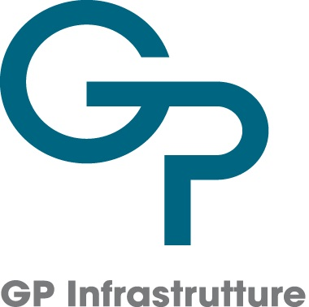
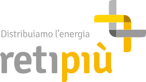
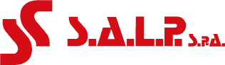